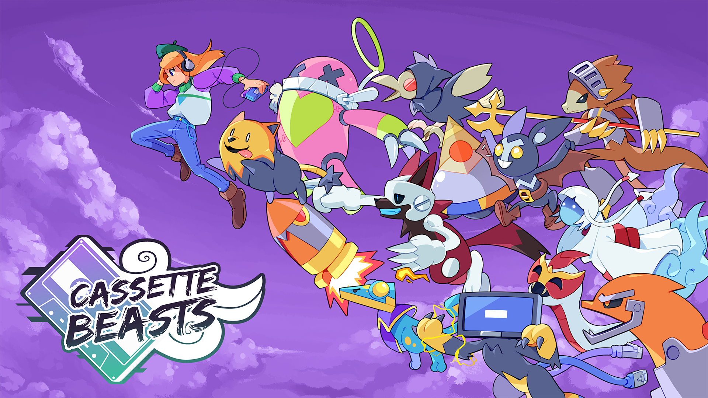
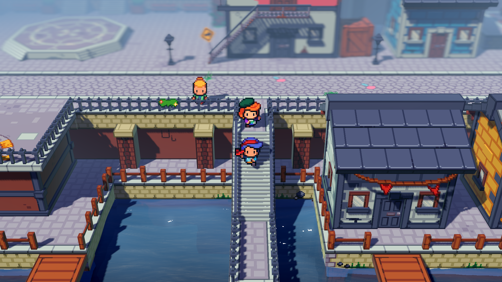
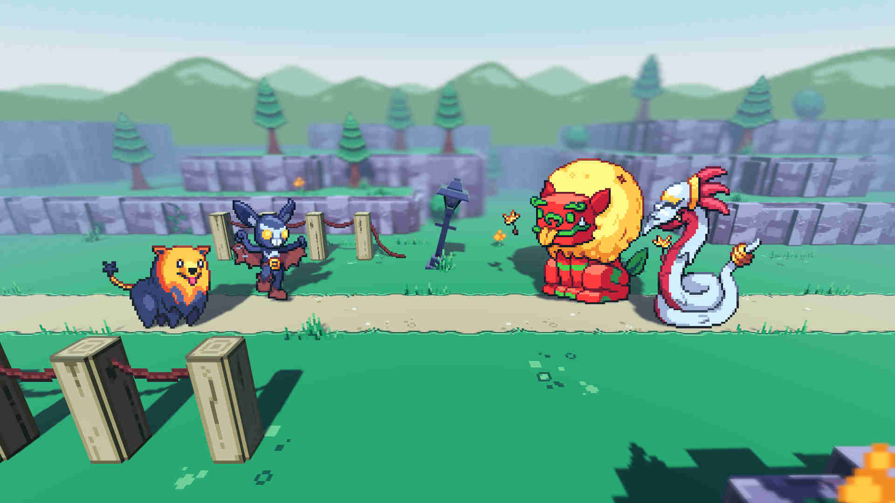

Welcome to Leilukin's Cassette Beasts Shrine!
Cassette Beasts is a 2D/3D hybrid creature collector open-world role-playing game developed by Bytten Studio, an indie team based in Brighton, United Kingdom, co-founded by Jay Baylis and Tom Coxon, and published by Raw Fury.
First released on Steam and Windows on 26 April 2023, later on console on 25 May 2023, Casette Beasts is available on Windows, Linux, Steam, Xbox Series X|S, Xbox One, Gamepass and Nintendo Switch.
Cassette Beasts also has an official website and official wiki.
You can buy Cassette Beasts from below links:
How I Got into Cassette Beasts
On 30 June 2023, when the Steam Summer Sale 2023 just started, I received Cassette Beasts as a Steam gift from a generous friend, who knew that I had been looking for independant monster collecting games, since I mostly play indie games instead of AAA games nowadays.
I started my first playthrough of Cassette Beasts on 18 July 2023, and I was immediately hooked. I could already feel that this game has like everything I could ask for in an indie alternative to Pokémon.
I ended up spending around 34 hours to beat the main campaign, and that was because I made the deliberate decision to max out the companion characters' relationship level before advancing to the final level of the main story, because this game has more focus on human characters and relationships than what you may expect in a monster-collecting game.
I love Cassette Beasts so much that I also purchased its Deluxe Edition, which includes the soundtrack, the art book and the Cosplay Pack as a birthday present for myself on 28 July 2023.
Why You Should Play Cassette Beasts
Cassette Beasts is a masterpiece of a monster collecting game, rivalling if not even surpassing Pokémon at its best, because while it is obvious that Cassette Beasts is inspired by Pokémon, it executes various aspects of Pokémon games with its own unique takes that are sometimes even better than Pokémon, from monster collecting mechanic, battle system, elemental type match ups, story, characters, lore, world building, map design, etc, with an amazing soundtrack that goes along with the game. As a result, Cassette Beasts is perfectly capable of standing on its own.
I cannot recommend Cassette Beasts enough if you like monster collecting games, including, if not especially, if you like Pokémon but want an indie alternative, or something different after finding Pokémon games getting stale or becoming jaded by the direction of the Pokémon games.
Indie monster collecting games in particular need all the support they can get to let more people know that Pokémon is not the only monster collecting game worth your attention, and Cassette Beasts is one of those indie games that prove indie games can be more creative than AAA games.
If you need more convincing on how Cassette Beasts is much more than a Pokémon clone, I have written a huge essay on this shrine.